방송통신기사 (2018-10-06 기출문제)
1과목: 디지털 전자회로
1. 다음 그림과 같이 2[㏀]의 저항과 실리콘(Si)다이오드의 직렬 회로에서 다이오드 양단의 전압 크기는 얼마인가?
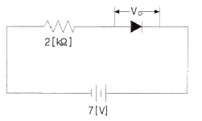
- 0[V]
- 1[V]
- 5[V]
- 7[V]
(정답률: 60%)
2. 다음 회로에서 안정계수(SV)값이 증가하기 위한 조건으로 옳은 것은?
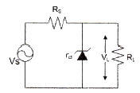
- VS를 증가시킨다.
- RS를 감소시킨다.
- 출력전압(△VL)을 감소시킨다.
- 출력전압(△IL)을 감소시킨다.
(정답률: 66%)

3. 다음 중 궤환회로에서 발진이 일어나는 조건인 바크하우젠 발진조건에 관한 설명으로 틀린 것은? (단, A는 증폭부의 증폭률이고 β는 궤환부의 궤환율이다.)
- 발진조건은 |Aβ |= 1 이다.
- Aβ＜ 1 이면 발진이 일어나지 않는다.
- Aβ ＞1 이면 발진은 되나 이득이 계속 증가하여 클리핑이 일어나면서 불안정하다.
- Aβ=1 은 발진조건으로 일정한 진폭의 직류출력이 발생한다.
(정답률: 48%)
4. 다음 증폭기 회로에서 RE가 증가하면 어떤 현상이 일어나는가?
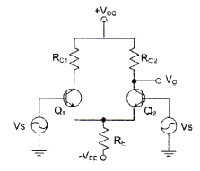
- 차동이득이 감소한다.
- 차동이득이 증가한다.
- 동상이득이 감소한다.
- 동상이득이 증가한다.
(정답률: 63%)
5. 전류 궤환 증폭기의 출력 임피던스는 궤환이 없을 경우에 비해 어떻게 변화하는가?
- 변화가 없다.
- 0이 된다.
- 감소한다.
- 증가한다.
(정답률: 61%)
6. 다음 중 부궤환 증폭기의 특성이 아닌 것은?
- 잡음이 감소된다.
- 주파수 특성이 개선된다.
- 비직선 왜곡이 감소된다.
- 안정도가 다소 감소된다.
(정답률: 57%)
7. 발진회로의 궤환루프의 감쇠가 0.5인 경우 발진을 유지하기 위한 증폭 회로의 전압이득은?
- 전압이득은 2.0이어야 한다.
- 전압이득은 1.5이어야 한다.
- 전압이득은 1.0이어야 한다.
- 전압이득은 0.5보다 적어야 한다.
(정답률: 61%)
8. 그림과 같은 발진회로에서 200[kHz]의 발진주파수를 얻고자 한다. C1과 C2의 값이 0.001[μF]이라면 L의 값은 약 얼마인가?
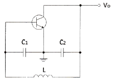
- 2.21[mH]
- 1.27[mH]
- 2.31[mH]
- 1.35[mH]
(정답률: 39%)
9. 다음 중 비동기 검파에 대한 설명으로 옳은 것은?
- 국부발진 신호와 입력신호를 곱하게 하는 곱셈 검파기이다.
- 송신측과 수신측이 동일한 반송파를 이용한다.
- 주로 ASK와 FSK에 이용된다.
- 동기검파보다 복조시스템이 복잡하다.
(정답률: 49%)
10. AM변조에서 100[%] 변조인 경우 그 변조 출력 전력이 6[kW]일 때, 반송파 성분의 전력은 얼마인가?
- 1[kW]
- 1.5[kW]
- 2[kW]
- 4[kW]
(정답률: 43%)
11. 주파수 변조에서 신호주파수가 4[kHz], 최대 주파수 편이가 20[kHz]이면, 변조지수는?
- 0.2
- 5
- 16
- 80
(정답률: 59%)
12. 간접 FM 변조방식(Armstrong 방식)에서의 필수 요소가 아닌 것은?
- 가산기(Adder)
- 평형 변조기(Balanced modulation)
- 위상천이기(90° phase shifter)
- 진폭제한기(Limiter)
(정답률: 55%)
13. RC 회로의 출력에서 최종치의 10[%]~90[%]까지 얻는데 소요되는 시간을 무엇이라 하는가?
- 지연 시간
- 하강 시간
- 상승 시간
- 전이 시간
(정답률: 71%)
14. 다음 그림과 같은 회로에 대한 설명 중 옳은 것은?
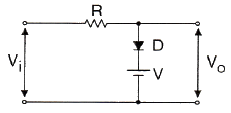
- 입력 파형의 아랫부분을 잘라내는 베이스 클리퍼 회로이다.
- 입력 파형의 윗부분을 잘라내는 피크 클리퍼 회로이다.
- 직렬형 베이스 클리퍼 회로이다.
- 입력 파형의 위, 아래 부분을 일정하게 잘라내는 클리퍼 회로이다.
(정답률: 57%)
15. JK 플립플롭(Flip-Flop)을 다음 그림과 같이 연결했을 때, 결과치가 같은 플립플롭은?
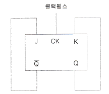
- D 플립플롭
- RS 플립플롭
- T 플립플롭
- MS 플립플롭
(정답률: 57%)
16. 다음 중 Master-Slave 플립플롭은 어떠한 현상을 해결하기 위한 플립플롭인가?
- 지연 현상
- Race 현상
- Set 현상
- Toggle 현상
(정답률: 65%)
17. 마스터 슬레이브 JK-FF에서 클럭 펄스가 들어올 때마다 출력 상태가 반전되는 것은?
- J=0, K=0
- J=1, K=0
- J=0, K=1
- J=1, K=1
(정답률: 55%)
18. 25진 리플 카운터를 설계할 경우 최소한 몇 개의 플립플롭이 필요한가?
- 4개
- 5개
- 6개
- 7개
(정답률: 57%)
19. 다음은 어떤 논리 회로인가?
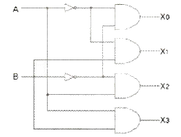
- 인코더
- 디코더
- RS 플립플롭
- JK 플립플롭
(정답률: 62%)
20. 다음 중 전감산기의 입력과 관계없는 것은?
- 감수
- 상위에서 자리 빌림
- 피감수
- 하위에서 자리 빌림
(정답률: 52%)
2과목: 방송통신 기기
21. 다음 중 방송망을 구성하는 전송설비가 아닌 것은?
- TBC
- STL
- FPU
- SNG
(정답률: 70%)
22. 다음 중 카메라의 위치를 움직이지 않고 카메라 헤드만을 수평방향으로 회전시키면서 촬영하는 것은?
- 패닝(Panning)
- 틸팅(Tilting)
- 달리(Dolly)
- 붐(Boom)
(정답률: 83%)
23. 다음 비디오 조명의 조건으로 틀린 것은?
- 밝기가 충분할 것
- 플리커(flicker)가 있을 것
- 조명의 효율이 좋을 것
- 연출의도에 따라 상황이나 분위기를 만들어 낼 것
(정답률: 84%)
24. 다음 중 우리나라 아날로그 라디오방송에 사용하지 않는 주파수대는?
- 중파
- 단파
- 초단파
- 극초단파
(정답률: 76%)
25. 다음 중에서 라디오방송 설비가 아닌 것은?
- 부조정실
- 비디오편집실
- 송신소
- 주조정실
(정답률: 80%)
26. 다음 각종 마이크 종류 중에서 평면적인 고정전극에 상대하여 얇은 진동막의 전극을 배치함으로써 최량의 음질을 실현하는 것은?
- 자기 변화형
- 압전형
- 다이내믹형
- 콘덴서형
(정답률: 74%)
27. 빛의 삼원색에 해당되지 않는 색은?
- 빨강(Red)
- 초록(Green)
- 노랑(Yellow)
- 파랑(Blue)
(정답률: 79%)
28. 동축케이블 내에 있어서 파장(λ)은 진공 중 파장(λo)의 2/3(67[%])가 된다. 이 때 색부반송파 3.579545[MHz]를 전송할 때 길이 1[m]당 몇 도[°]의 위상(Phase) 차이가 생기는가?
- 3.58
- 4.5
- 6.44
- 7.14
(정답률: 43%)
29. 다음 중 ATSC3.0에서 규정하는 영상 압축방식은?
- AC-3
- AC-4
- MPEG-H
- H.265
(정답률: 68%)
30. 다음 중 카메라의 구성과 관계가 없는 것은?
- 트라이 포드(Tripod)
- 뷰파인더(Viewfinder)
- 렌즈
- 텔레신(Telecine)
(정답률: 77%)
31. 디지털 위성방송에 대한 설명으로 틀린 것은?
- 건물 내부까지 전파가 용이하게 도달된다.
- 디지털변조가 가능하다.
- 수신측에서 오류정정이 가능하다.
- 부가방송서비스를 제공할 수 있다.
(정답률: 68%)
32. 반송파대 잡음비(C/N)가 10dB 이상이어야 하는 위성방송에서 잡음전력이 1[W]인 경우 반송파 전력은 몇 와트(Watt) 이상이어야 하는가?
- 1
- 10
- 20
- 40
(정답률: 65%)
33. CATV에서 헤드엔드로부터 송출된 신호를 서비스 구역 전역에 전송하기 위한 전송로를 무엇이라고 하는가?
- 간선(Trunk Line)
- 분배선(Feeder Line)
- 인입선(Drop Line)
- 가입자선(Subscriber Line)
(정답률: 79%)
34. 다음 중 동축케이블에 대한 광섬유 케이블의 특징으로 적절하지 않은 것은?
- 좁은 대역폭을 가지고 있다.
- 작은 크기와 적은 무게를 가지고 있다.
- 적은 감쇠도(Attenuation)를 가지고 있다.
- 전자기적 잡음에 강하여 도청이 어렵다.
(정답률: 80%)
35. IPTV에서 IGMP(Internet Group Management Protocol)은 멀티캐스트 데이터를 요구하는 수신기가 전송되어 오는 멀티캐스트 데이터를 받기 위해 그룹에 접속하거나 작업을 하기 위한 프로토콜이다. 다음 중 IGMP에서 멀티캐스트 그룹을 사용하는 이유가 될 수 없는 것은?
- 멀티캐스트 그룹에 진입과 탈퇴가 자유롭다.
- 다양한 형태의 정보를 같이 보낼 수 있기 때문에 넓은 범위에서 사용이 가능하다.
- 멀티캐스트 그룹에 접속한 수신기가 없으면 자동으로 네트워크상에서 사라진다.
- 그룹은 그 그룹에 구성된 숫자의 조정이 가능하다. 즉 접속 숫자가 많을 경우 자동으로 인지하여 그 공간을 확보한다.
(정답률: 43%)
36. 국내 지상파 DMB 서비스에 사용되는 주파수 대역은 사업자당 1.536MHz이다. 지상파 한 채널에 최대 몇 개의 DMB 사업자를 허가할 수 있는가?
- 2
- 3
- 4
- 5
(정답률: 69%)
37. 다음 중 방송제작용 영상스위처(VMU)에 대한 설명으로 틀린 것은?
- 자체 출력 SYNC 레벨은 블랭킹 레벨 이하에서 -40[IRE]가 유지되어야 한다.
- VMU 입력단에 입력되는 영상신호와 펄스들의 출력 임피던스는 75[Ω]이어야 한다.
- 영상입력단에 가해진 모든 영상소스는 인코더에서 출력되는 테스트용 컬러바를 이용하여 신호레벨, 위상, 타이밍 등을 확인하고, 정확히 조정하여야 한다.
- 스위처(Switcher) 자체의 컬러 블랙과 컬러 백그라운드 신호의 셋업 레벨은 40[IRE]가 되어야 한다.
(정답률: 72%)
38. 다음 중 NTSC용 웨이브폼 모니터에서 측정된 50[IRE]는 몇 [mV]인가?
- 357[mV]
- 350[mV]
- 346[mV]
- 334[mV]
(정답률: 73%)
39. 다음 중 벡터스코프에 대한 설명으로 맞는 것은?
- 영상신호 중의 색도 성분을 측정하기 위해 색도 신호를 복조하여 그 위상과 진폭을 벡터로 표시하는 장치
- TV 전송 신호의 파형을 분석하여 변조된 영상과 음성신호의 신호품질을 측정하는 오실로스코프 장치
- RF신호를 측정하는 오실로스코프로 신호의 특성을 2차원 정보로 변환하여 벡터로 표시하는 장치
- 피변조파에 포함된 영상신호 레벨 대 진폭 변조된 잡음의 비를 벡터적으로 표시하는 장치
(정답률: 69%)
40. DTV 송신안테나 중 Panel형과 Slot형에 대한 특성을 비교한 것으로 틀린 것은?
- Panel형은 바람의 영향을 많이 받으나 Slot형은 평면적이 적어 바람의 영향을 적게 받아 시설유지에 유리하다.
- 전파의 수직패턴에 있어 Panel형은 비교적 빔틸트가 일정하나 Slot형은 주파수에 따라 변동된다.
- 전파의 수평패턴 레벨차는 Panel형이 3[dB]정도 나타나지만 Slot형은 0.5[dB]정도다.
- Slot형은 Panel형에 비해 다채널용으로 사용하기에 적합하다.
(정답률: 68%)
3과목: 방송미디어 공학
41. 다음 중 아날로그 음성신호의 양옆에 디지털 정보를 배치하여 전송하는 혼성(Hybrid)모드로서, 아날로그 음성신호의 대역폭을 줄이고 기존 할당된 방송주파수 내에서 디지털 방송신호까지 보낼 수 있는 확장성 혼성 디지털라디오방송 방식은?
- DRM
- IBOC
- DRM+
- Eureka-147
(정답률: 60%)
42. 다음 중 FM 부가방송 국제표준으로 권고하고 있는 DARC 방식의 기저대역 주파수는?
- 53[kHz]
- 57[kHz]
- 67[kHz]
- 76[kHz]
(정답률: 57%)
43. 다음 중 연주소 내 부조정실의 역할로 틀린 것은?
- 뉴스센터, 편집실 등 설비에서 넘겨받은 영상, 음성 신호 자료를 송신소로 송출한다.
- 카메라, 조명, 영상, 무대를 책임지는 프로듀서, 기술감독 등이 근무하고 있다.
- 다양한 영상, 조명, 음향 등을 조정하는 장비가 설치되어 있다.
- 드라마 등 각종 TV프로그램을 녹화한다.
(정답률: 81%)
44. 인간의 가청주파수는 20~20,000[Hz]이다. 가청주파수 3[kHz]의 파장의 길이는 다음 중 어느 것인가?
- 1[km]
- 10[km]
- 100[km]
- 1,000[km]
(정답률: 73%)
45. 아날로그 신호를 디지털 형태의 PCM 신호로 변화시키기 위해서는 세 가지 기본 과정이 필요하다. 다음 중 PCM과정으로 옳은 것은?
- 표본화(Sampling) 과정 → 양자화(Quantization) 과정 → 부호화(Coding) 과정
- 부호화(Coding) 과정 → 표본화(Sampling) 과정 → 양자화(Quantization) 과정
- 표본화(Sampling) 과정 → 부호화(Coding) 과정 → 양자화(Quantization) 과정
- 양자화(Quantization) 과정 → 표본화(Sampling) 과정 → 부호화(Coding) 과정
(정답률: 86%)
46. 양지향성과 단일지향성의 마이크를 음원에 가까이 대고 사용하면 저음의 출력이 증가되는 현상을 무엇이라고 하는가?
- 회절
- 도플러 효과
- 근접효과
- 칵테일 파티 효과
(정답률: 77%)
47. 다음 중 TV 주사방식의 설명에서 틀린 것은?
- 순차주사는 하나의 화면을 기수와 우수로 나누어 전송 한다.
- 순차주사는 주사 속도가 빨라서 전송 주파수 대역을 넓게 차지한다.
- 비월주사는 한 번에 보내는 정보량이 절반으로 되어 전송 주파수 대역을 반(1/2)으로 줄일 수 있다.
- 비월주사는 하나의 화면을 두 개의 필드로 나눈다.
(정답률: 68%)
48. 방송 스튜디오 시설 공사 시 컴포지트(Composite) 영상신호용 케이블의 임피던스는?
- 50[Ω]
- 60[Ω]
- 70[Ω]
- 75[Ω]
(정답률: 77%)
49. 색상 스펙트럼에서 마젠타(Magenta)와 싸이안(Cyan)색의 광을 혼합하면 어떤 색이 나오는가?
- 청색(Blue)
- 노랑(Yellow)
- 적색(Red)
- 녹색(Green)
(정답률: 61%)
50. 다음 CIE 색상 도표에서 A, B, C 점에 해당하는 색상들이 순서대로 올바르게 나열된 것은?
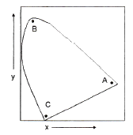
- 적색, 청색, 녹색
- 녹색, 적색, 청색
- 녹색, 청색, 적색
- 적색, 녹색, 청색
(정답률: 70%)
51. 데이터 방송 서비스 분류에서 방송 프로그램과 관련된 정보를 시청자에게 제공하는 서비스로 방송 중에 있는 드라마, 음악 프로그램, 스포츠 프로그램 등의 프로그램과 연관된 각종 정보를 데이터로 제공하는 서비스는?
- 독립 정보 서비스
- 프로그램 연동 정보 서비스
- 양방향 텔레비전 서비스
- 전자상거래 서비스
(정답률: 77%)
52. DAB(Audio+Data)에 비디오를 추가한 멀티미디어 서비스로서 고품질의 음성 및 영상서비스를 언제 어디서나 제공할 수 있는 이동 멀티미디어 방송 서비스는?
- DMB
- IPT
- MMS
- 3DTV
(정답률: 87%)
53. 디지털 오디오 파일의 크기를 결정하는 요소가 아닌 것은?
- 양자화 비트수
- 시간
- 샘플링 레이트
- 음색
(정답률: 81%)
54. 영상 신호의 크로마 서브 샘플링 방식에서 4:2:0일 때와 4:2:2일 때 크로마 성분(Cr, Cb) 정보량의 차이는 얼마인가?
- 2배
- 4배
- 8배
- 16배
(정답률: 62%)
55. 다음 중 양방향 대화형 데이터방송 서비스에 대한 설명으로 틀린 것은?
- 수신단말에서 리턴 채널을 통해 데이터를 다시 전송측에 전달되는 서비스를 의미한다.
- 오디오/비디오 방송프로그램과는 별개의 전송매체를 이용하여 데이터를 전송한다.
- 연동형 데이터방송의 예로는 퀴즈, 홈쇼핑, TV전자상거래 등이 있다.
- 독립형 데이터 방송은 홈뱅킹, 전자우편(e-mail), 채팅 등이 있다.
(정답률: 71%)
56. 디지털 텔레비전 방송에서 방송편성표 및 프로그램 내용 등을 안내하는 기능을 무엇이라고 하는가?
- DLS(Dynamic Label Segment)
- EPG(Electronic Program Guide)
- NPAD(Non-Program Associated Data)
- FIC(Fast Information Channel)
(정답률: 75%)
57. 다음 중 거실의 TV에서 인터넷포털 및 디지털 방송을 사용자에게 보다 편리한 인터페이스를 통해 제공하는 서비스는?
- 체감형 서비스
- TV포털서비스
- 멀티모드 서비스
- 멀티미디어 서비스
(정답률: 68%)
58. 다음 중 미국식 디지털 TV 표준(ATSC)의 오디오 압축 방식은?
- DAB
- SPDIF
- AC-3
- PCM
(정답률: 75%)
59. 영상신호의 데이터 압축에서 엔트로피(entropy) 개념에 관한 설명 중 틀린 것은?
- 디지털데이터의 부호화는 데이터를 구성하는 각각의 정보가 어떠한 출현확률을 가지는가에 의해서 압축비가 달라진다.
- 엔트로피(entropy)가 높을수록 각각의 정보가 출현할 확률이 높다.
- 각각의 정보가 출현할 확률이 높을수록 효율적인 부호화가 가능하다.
- 각각의 정보가 출현할 확률이 모두 같다면 엔트로피(entropy)가 높아져서 압축이 불가능하다.
(정답률: 48%)
60. MPEG-2의 프레임 구조 중 순방향 프레임간 예측화면은 무엇인가?
- I 프레임
- S 프레임
- P 프레임
- B 프레임
(정답률: 61%)
4과목: 방송통신 시스템
61. 표본화에 의하여 얻어진 PAM 신호를 디지털화하기 위하여 진폭축으로 이산값을 갖도록 처리하는 것을 무엇이라고 하는가?
- 부호화
- 양자화
- 이진화
- 디지털화
(정답률: 71%)
62. 다음 중 진폭변조(Amplitude Modulation)에서 변조도가 1일 때 반송파 : 상측파대 : 하측파대의 전력 비율은?
- 1 : 1 : 1
- 1 : 1/2 : 1/2
- 1 : 1/4 : 1/4
- 1 : 1/8 : 1/8
(정답률: 70%)
63. 다음 변조방식 중 진폭과 위상을 동시에 사용하고 저역 통과 필터를 사용하는 변조방식은 어느 것인가?
- QAM
- MSK
- DPSK
- FM
(정답률: 74%)
64. 64QAM 변조방식의 전송밀도(bps/Hz)는 얼마인가?
- 3
- 4
- 6
- 8
(정답률: 73%)
65. 다음 보기에서 설명하는 것은?
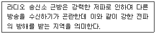
- 리프프로그(leapfrog) 지역
- 블랭킷(blanket) 지역
- 커버리지(coverage) 지역
- 널(null) 지역
(정답률: 81%)
66. 다음 중 FM송신기의 최고변조주파수가 15[kHz]인 경우 100[%] 변조시 점유주파수의 대역폭은?
- 10[kHz]
- 90[kHz]
- 180[kHz]
- 270[kHz]
(정답률: 62%)
67. 다음 중 스테레오 필드에서 밸런스 유지와 모노 호환성을 위해 두 마이크의 적절한 배열각도는?
- 90도 이내
- 100도 이내
- 1⑤도 이내
- 110도 이내
(정답률: 72%)
68. 다음 중 지상파 Digital TV(DTV) 송신기에서 Mask Filter를 쓰는 주된 목적으로 옳은 것은?
- S/N 비의 특성 개선
- 출력 마진 향상
- 타 채널에 대한 간섭 최소화
- 영상에 대한 음성지연 보상
(정답률: 57%)
69. 다음 중 디지털 전송시스템의 등화기(Equalizer) 기능을 설명한 것으로 옳은 것은?
- 디지털 신호의 전송에서 입력의 잡음을 제거하여 신호의 출력 레벨을 높게 하는 장치
- 디지털 신호의 전송에서 신호의 왜곡을 줄여 비트오류를 줄이는 장치
- 디지털 신호의 전송에서 신호의 비선형성을 줄여 비트오류를 증가시키는 장치
- 디지털 신호의 전송에서 신호의 대역폭 효율을 최대화하는 장치
(정답률: 57%)
70. 다음 중 ATSC 방식의 디지털TV 방송의 특징이 아닌 것은?
- 넓은 지역 서비스가 가능하다.
- HD급 영상에 SD급 영상을 추가하여 구성이 가능하다.
- 통신네트워크와 연동하여 홈쇼핑, 홈뱅킹 등 양방향 데이터서비스 제공이 가능하다.
- 이동수신 성능이 우수하고 SFN(Single Frequency Network) 구성에 용이하다.
(정답률: 64%)
71. 유선방송설비의 설치도면 작성에 필요한 기호 및 약호에서 전치증폭기(Head Amp)를 나타내는 기호는?
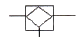
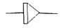
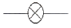
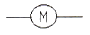
(정답률: 69%)
72. 유선방송국용 전원설비에서 최대로 사용되는 전력을 안정적으로 공급할 수 있도록 하기 위한 전압·전류의 변동허용범위로 맞는 것은?
- ±5[%] 이내
- ±10[%] 이내
- ±15[%] 이내
- ±20[%] 이내
(정답률: 74%)
73. 다음 중 국내디지털유선방송의 상·하향 대역 분리 방식으로 옳은 것은?
- Sub split 방식
- Mid split 방식
- High Split 방식
- Extended Mid Split 방식
(정답률: 58%)
74. 다음 중 위성방송에서 전파손실의 가장 큰 부분을 차지하는 손실은?
- 자유공간 손실
- 감쇠와 흡수
- 산란과 회절
- 다중경로 손실
(정답률: 73%)
75. 다음 중 위성방송의 특징과 가장 거리가 먼 것은?
- 다채널성
- 고품질성
- 대용량성
- 국지성
(정답률: 80%)
76. 다음 설명으로 맞는 안테나는 무엇인가?
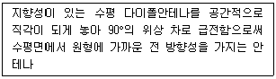
- 무지향성 안테나
- 파라볼라 안테나
- 혼 안테나
- 빔 안테나
(정답률: 73%)
77. 전송방식이 OFDM인 국내 지상파 DMB의 변조방식은?
- DQPSK
- FM
- DSK
- ASK
(정답률: 74%)
78. 화상통신회의의 특징이라고 할 수 없는 것은?
- 시간과 경비의 절약, 신속하고 정확한 정보전달이 가능하다.
- 적임자의 회의참석이 용이하다.
- 기업 활용의 극대화 및 효율화를 기대할 수 없다.
- TV회의를 실현하려면 고속, 광대역 네트워크가 필요하다.
(정답률: 78%)
79. 다음은 CATV시스템의 기본 구성으로 케이블의 손실을 보상해주는 증폭기에 대한 설명이다. 다음에 해당되는 증폭기는?
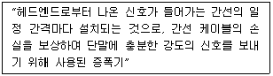
- 간선 증폭기 [TA : Trunk Amplifier]
- 간선 분기증폭기 [TBA : Trunk Bridger Amplifier]
- 분기증폭기 [BA : Bridger Amplifier]
- 쌍방향 중계증폭기
(정답률: 74%)
80. 접지 시공 시방서에 의한 한국산업규격(KS)의 표준이 잘못된 것은?
- KS C 2621 동선용 나압착 슬라브
- KS C 3103 전기용 연동연선(AS)
- KS C 3301 600V 비닐 절연전선(IV)
- KS C 0804 접지선 및 접지측 전선의 색별 통칙
(정답률: 77%)
5과목: 전자계산기 일반 및 방송설비기준
81. 전자계산기 소프트웨어는 시스템 소프트웨어와 응용 소프트웨어의 두 가지 종류로 구분될 수 있다. 다음 중 시스템 소프트웨어가 아닌 것은?
- 과학용 프로그램
- 운영 시스템
- 데이터베이스 관리 시스템
- 통신 제어 프로그램
(정답률: 76%)
82. 디스크 오류가 발생하였을 때, 디스크를 재구성하지 않고 복사된 것을 대체함으로써 데이터를 복구할 수 있는 RAID 레벨(Level)은?
- RAID 0
- RAID 1
- RAID 3
- RAID 5
(정답률: 70%)
83. 10진수 (38)10을 2진수로 올바르게 변환한 것은?
- (100100)2
- (100101)2
- (100110)2
- (100111)2
(정답률: 65%)
84. 다음 중 자료의 병렬전송을 직렬전송으로 변경하는 레지스터는?
- 명령 레지스터(IR)
- 메모리 주소 레지스터(MAR)
- 메모리 버퍼 레지스터(MBR)
- 쉬프트 레지스터(Shift Register)
(정답률: 84%)
85. 파일 관리자는 파일 구조에 따라 각기 다른 접근 방법으로 관리한다. 다음 중 저장공간의 효율성이 가장 높은 파일 구조는 어느 것인가?
- 직접 파일(Direct File)
- 순차 파일(Sequential File)
- 색인 순차 파일(Indexed Sequential File)
- 분할 파일(Partitioned File)
(정답률: 59%)
86. 다음 중 컴퓨터의 운영체제에서 로더(Loader)의 주요 기능이 아닌 것은?
- 프로그램과 프로그램 간의 연결(linking)을 수행한다.
- 출력 데이터에 대해 일시 저장(spooling) 기능을 수행한다.
- 프로그램이 실행될 수 있도록 번지수를 재배치(relocation)한다.
- 프로그램 또는 데이터가 저장될 번지수를 계산하고 할당(allocation)한다.
(정답률: 75%)
87. 몇 개의 관련 있는 데이터 파일을 조직적으로 작성하여 중복된 데이터 항목을 제거한 구조를 무엇이라 하는가?
- Data File
- Data Base
- Data Program
- Data Link
(정답률: 68%)
88. 다음 중 운영체제가 제공하는 소프트웨어 프로그램이 아닌 것은?
- 스택(Stack)
- 컴파일러(Compiler)
- 로더(Loader)
- 응용 패키지(Application Package)
(정답률: 52%)
89. 접근시간(Access Time)과 사이클시간(Cycle Time)에 관한 설명으로 틀린 것은?
- 사이클시간이 접근시간보다 대개 시간이 더 걸린다.
- 접근시간은 메모리로부터 정보를 거쳐오는 데 걸리는 시간이다.
- 접근시간은 주기억장치에만 관계되며 보조기억장치와는 상관이 없다.
- 접근시간은 메모리로부터 정보를 가지고 나와서 다시 재 기억시키는데 걸리는 시간이다.
(정답률: 74%)
90. 16비트 명령어 형식에서 연산코드 5비트, 오퍼랜드1은 3비트, 오퍼랜드2는 8비트일 경우, ⓐ 연산종류와 사용할 수 있는 ⓑ 레지스터의 수를 바르게 나열한 것은?
- ⓐ 32가지, ⓑ 512
- ⓐ 31가지, ⓑ 8
- ⓐ 32가지, ⓑ 8
- ⓐ 8가지, ⓑ 511
(정답률: 66%)
91. 다음 중 유선방송국 설비 등에 관한 기술기준에서 사용하는 증폭기의 설명으로 가장 적합한 것은?
- 입력신호 에너지를 2개 이상으로 균등하게 증폭하는 장치
- 텔레비전 방송신호를 수신하기 위한 증폭장치
- 낙뢰 등에 의한 이상 전류 또는 이상전압의 유입을 제한하거나 차단하는 장치
- 동축케이블·분배기 및 분기기 등에 의한 상·하향 신호의 전송손실을 보상하기 위하여 사용하는 장치
(정답률: 75%)
92. 다음 중 입력신호 에너지를 간선에서 지선으로 불균등하게 분리시키는 장치는?
- 분배기
- 분기기
- 분사기
- 분파기
(정답률: 77%)
93. 다음 중 방송법에서 정한 방송사업의 종류가 아닌 것은?
- 지상파방송사업
- 위성방송사업
- 방송채널사용사업
- 중계유선사업
(정답률: 63%)
94. 방송법 및 방송법시행령의 내용으로 맞지 않는 것은?
- 한국방송공사 이사회는 이사장을 포함한 이사 11인으로 구성한다.
- 한국방송공사의 자본금은 300억원으로 하고 50%는 정부가 출자한다.
- 시청자위원회는 10인 이상 15인 이내의 위원으로 구성한다.
- 방송시설의 효율적 이용을 위하여 방송시설과 그에 부속된 토지·건물 등을 공동으로 구축·이용하도록 할 수 있다.
(정답률: 69%)
95. 지상파 디지털 텔레비전 방송용 무선설비의 기술기준 중 변조 및 송신에 대한 설명으로 옳은 것은?
- 펄스 정형 필터는 제곱근 레이즈드 여현 필터(root-raised cosine filter)를 사용할 것
- 변조방식은 12-VSB 방식으로 할 것
- 전송 속도는 16.762 Msymbols/sec로 할 것
- 변조된 신호의 채널 당 주파수 대역폭은 8 ㎒로 할 것
(정답률: 58%)
96. 다음은 방송법상의 방송의 정의를 설명한 것이다. 괄호 안에 가장 적합한 것은?
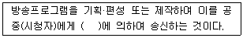
- 정보통신설비
- 방송통신설비
- 이동통신설비
- 전기통신설비
(정답률: 67%)
97. 과학기술정보통신부장관은 전파자원의 공평하고 효율적인 이용을 촉진하기 위하여 시행해야 할 사항이 아닌 것은?
- 주파수분배의 변경
- 주파수 회수 또는 주파수 재배치
- 새로운 기술방식으로의 전환
- 무선국 공동 운영
(정답률: 66%)
98. 종합유선방송국 설비의 기술적 조건에 대한 사항 중 틀린 것은?
- 종합유선방송국이 사용할 수 있는 대역내 주파수 대역은 5.75㎒부터 1,002㎒까지이다.
- 영상신호의 휘도신호와 색차신호의 표본당 비트수는 4비트로 한다.
- 디지털채널의 변조방식 및 전송조건 등은 「디지털 유선방송 송수신 정합」표준을 따른다.
- 아날로그 종합유선방송국의 주 전송장치의 전송방식은 진폭변조 방식으로 한다.
(정답률: 57%)
99. 종합 유선방송신호를 전송하기 위한 전송선로시설의 질적 수준 측정항목에 포함되지 않는 것은?
- 영상반송파의 신호레벨
- 음성반송파의 주파수편차
- 혼변조도
- 채널간 영상반송파의 레벨차
(정답률: 46%)
100. 다음 중 중계유선방송의 영상반송파의 신호레벨은 수신자설비의 분계점에서 몇 [dBμV]이라야 하는가?
- 45~65[dBμV]
- 55~75[dBμV]
- 65~85[dBμV]
- 75~95[dBμV]
(정답률: 75%)
회로를 살펴보면, RS가 감소하면 VS가 증가하게 됩니다. 이는 출력전압(△VL)을 감소시키는 효과를 가지며, 따라서 안정계수(SV)값이 증가하게 됩니다.
따라서 정답은 "RS를 감소시킨다." 입니다.